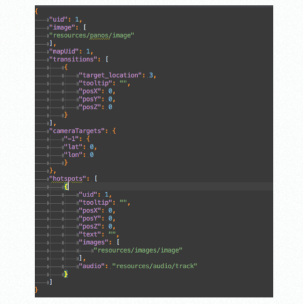
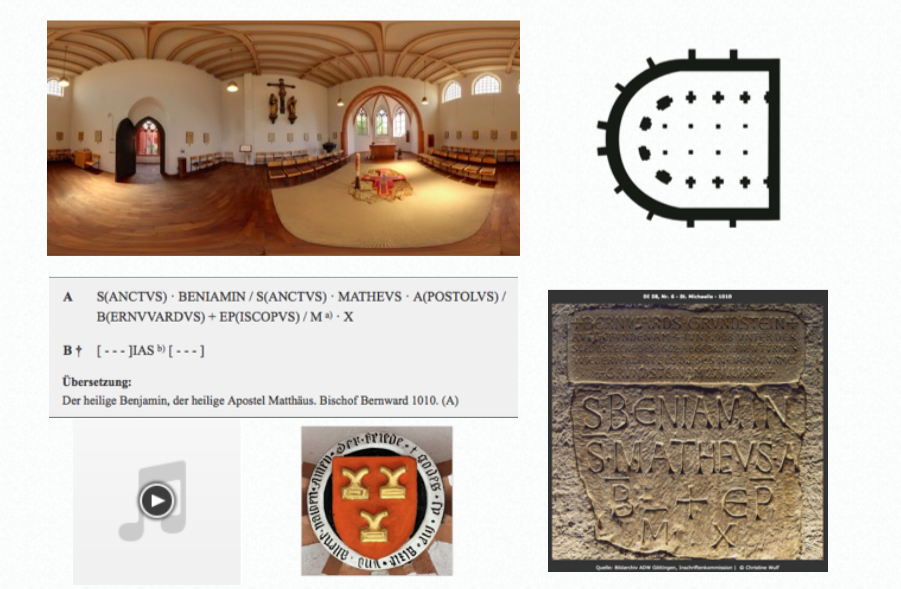
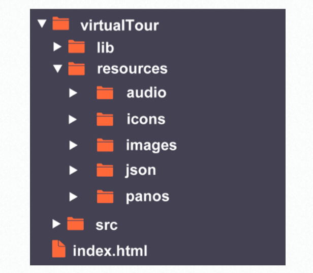

Digital Humanities 2016, Kraków
Visualising Cultural Spheres
Virtual Tours and Epigraphical Data
B43 : Short Paper Session : Visualizing 3
Max Grüntgens (ADWL Mainz) | Anna Neovesky (ADWL Mainz)
 www.digitale-akademie.de |
www.digitale-akademie.de |
 @digicademy |
@digicademy |
 digicademy
digicademy
Released under
CC BY 4.0 (Max Grüntgens, Anna Neovesky and Torsten Schrade; Digitale Akademie)
Table of Contents
01
Background Information
Administrative and Institutional Background
The Academy of Sciences and Literature in Mainz …
- … hosts diverse and heterogenous projects throughout virtually all fields of the Humanities.
- … maintains projects with a running time ranging from approx. 12 years to 30 years.
- … thus provides huge amounts of scholarly research data and meta data in printed as well as digital forms and formats.
- … and her sister academies therefore create spaces for basic research in the Humanities and thus take an integral part in fueling scholarly research as a whole.
Project Specific Background
The exemplary project German Inscriptions (GI/DI) …
- … accumulates and redacts medieval and early modern inscriptions found within the borders of the FRG, the RA and South Tyrol.
- … compiles volumes focussed on a administrative region, a city, or building.
- … currently provides 90 volumes in print.
- … currently provides more than 40 volumes in a digitized form.
- … the data provided ranges from text data over spatial and scholarly meta data, and photographic images to index data.
Thus the project provides allmost all of the data needed to power an undefined number of visualizations in regard to illustrative materials.
Project Specific Background
Other scholarly projects …
- … likewise produce a diverse set of research data and meta data.
- … also focus on one or more specific scholarly topics, geographic locations, conceptual entities.
- … are currently at the beginning or in the midst of a digitizing or data furbishing lifecycle.
Project Specific Background
Other scholarly projects …
- … are in this moment or in the near future able or coerced to rearrange their currently fixed set of data and meta data. Hereby gaining the possibility to structure their data in a more modular and flexible way.
- … often lack the technological as well as human resources to create a complex visualization from scratch.
Scholarly research projects may differ significantly in regard to their research question, and their methodological, or epistemological approaches. The research data produced in textual as well as eidetic form, however, can be regarded as analogous—at least in my opinion and from a conceptual point of view.
Technological Background
Technological and conceptual prerequisites are …
- … serving the research data and meta data in easy-to harvest as well as easy-to-use formats, e.g. in TEI-XML or JSON.
- … serving the data in a modularized way oriented towards microservice and service oriented architecture paradigms.
- … providing easy-to-use interfaces based on paradigms like REST.
- … providing a secure legal context for reuse, adaption, and mixing of data. Thus it is recommended—at least for publicly funded research in my opinion—to serve the data under an as-open-as-possible licence, e.g. CC BY or CC 0.
02
Execution
Software
- HTML5 & CSS3
- JavaScript
- JSON
- WebGL
- GitHub
The chosen software should as a consequence represent modern, developed web standards, for the simple reason that they provide straightforward working conditions for the developers as well as a well-rounded and familiar user experience.
Input
Input data are …
- … a JSON file for configuration, file distribution and data exchange.
- … different types of files, such as …
- … image files, panoramic photos as well as groundplans.
- … text files containing for example illustrative or scholarly texts.
- … sound and video files.
- … organised in a concise and easy to grasp folder structure.
Adaption of this core JSON file makes it possible to create a custom virtual tour. All the cultural institution has to add are suitable images, positions and texts which can for example be received via data interfaces and web APIs. The generic virtual tour and the user manual are available on GitHub.
03
Outlook
Cultural Programming
Cultural Coding === Generic Coding
Creating digital code in the public sector is by necessity an open source process.
In contrast to coding in the realm of the competitive private sector, in the cultural realm it is not—and must not be—imperative to shield digital products, project data and know-how.
Open source software enables people from outside the project to reuse and adapt the outcome as well as to contribute. A generic approach increases the reusability of the code and the application.
Reusability and a Culture of Openness
Thus this emerging Culture of Openness within and by the DH community has to be promoted further by usage of …
- … common web standards.
- … reuse and advancement of earlier program packages and libraries.
- … redistributing advancements to the community via social programming portals, like for example Github.
- … serving of data and meta data by means of open interfaces, like REST.
- … creating secure legal spaces by usage of as-open-as-possible licenses.
Conclusion
My conclusion is that most projects in the Humanities are already producing the data sets, which—in a modularized and open way—can be applied to fuel diverse froms of visualizations based on generic or universal programming.
By this means the data sets may not only be fostering new insights within the scholarly community by means of exploratory visualizations, but also may inspire more publicly oriented projects, thereby boosting the public acceptance of and interest in Humanities scholarship.
Links and Resources
- Impress.js (Präsentation)
Presentation: GitHub
Virtual Tour: GitHub
License: CC BY 4.0, Max Grüntgens, Anna Neovesky and Torsten Schrade; Digitale Akademie